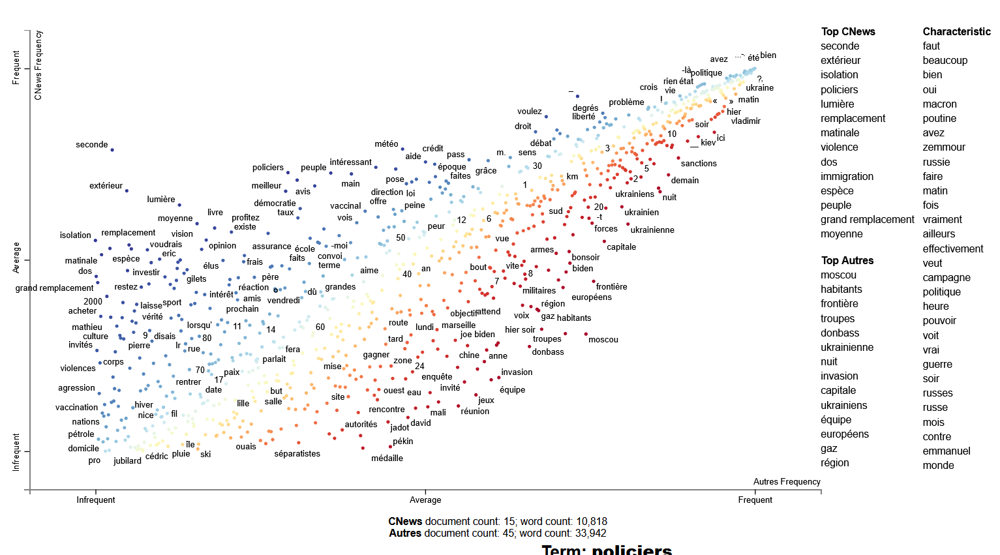

Support pour un atelier de découverte du package Python Scattertext, à travers une analyse comparative du discours sur les chaînes TV d'information en continu françaises.
Scattertext propose une visualisation très simple et intuitive des termes sous forme de nuages de points répartis en fonction de leur fréquence dans deux corpus A et B. Il introduit également une mesure d'association spécifique de termes à une variable.
Le code dans ce dépôt s'appuie sur un jeu de données au format CSV, non fourni, qui porte sur 1 mois x 5 chaînes d'info en continu françaises, incluant la transcription Whisper, le genre des locuteurs Inaspeechsegmenter, ainsi que les notices documentaires décrivant ces programmes. L'accès à ces données est soumis à la signature d'une convention de recherche avec le lab INA.
Les points représentent des termes. En ordonnée, la fréquence du terme sur Cnews. En ordonnée, la fréquence du terme sur les autres chaînes. )
Sources :
L'atelier a eu lieu en ligne le 22 avril 2025 dans le cadre du programme d'animation scientifique du lab INA.